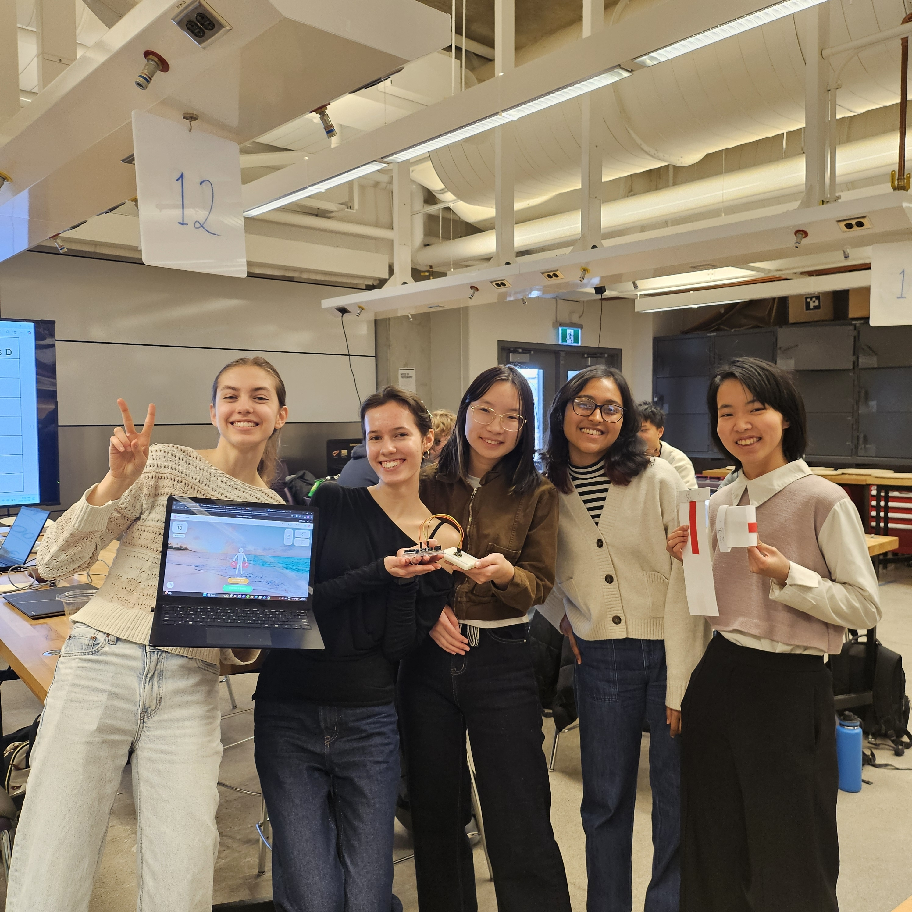

STEPPING STONES
Rehabilitation platform that was developed as a part of health Tech Innovation Challenge.
Project Overview
The Stepping Stone Project was developed as part of the Health Tech Innovation Challenge. Our team focused on creating a demo application designed to support elderly cancer patients transitioning from the CCCare Program to a safe and effective at-home exercise routine.
Technical Implementation
The demo consisted of two integrated components:
1. Frontend Platform Overview
A digital prototype of the platform was developed using TypeScript, HTML, and JavaScript. This interface demonstrated how patients would interact with the system, access exercise guidance, and receive feedback on their performance.
2. Motion Tracking and Data Processing System
The second component was implemented in Python and focused on real-time motion analysis. The system collected data from an Arduino board, processing both accelerometer and gyroscope signals using a mathematical and algorithmic approach.
The processed data was designed to integrate into a Python-based backend, where measurement noise could be corrected and movement ranges normalized. This allowed patient motion to be scaled against standardized benchmarks, enabling accurate comparison and personalized feedback.
Project Goal
The overall goal of the system was to detect detailed patient movement patterns and ensure exercises were performed safely and correctly, providing measurable, data-driven feedback during independent rehabilitation.
Personal Impact
Participated in the design disscussion and design iteration process, including communication with stakeholders, conducting user research, and implementing feedback into the final product.
Was responsible for implementing the motion tracking and data processing system in Python, which involved further collecting and analyzing data from an Arduino board to provide real-time feedback on patient movements.
Project Gallery

Stepping Stones project team